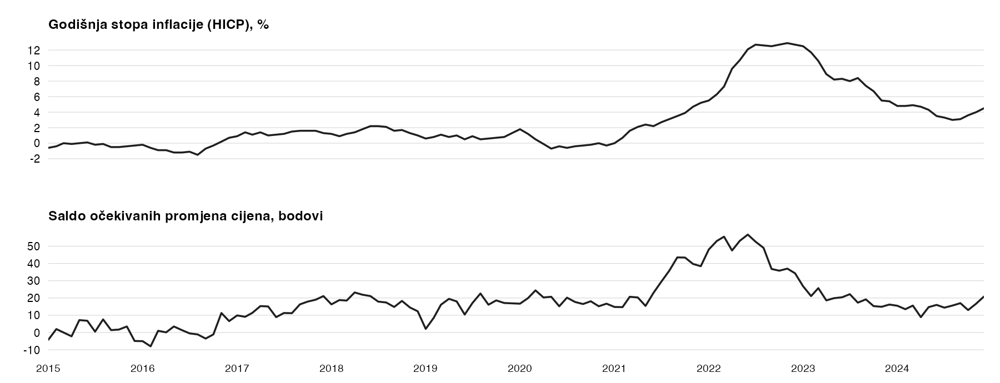

Radionica · Ekonomski susreti 2026 · 60 minuta
Istraživanje uz umjetnu inteligenciju u jednom satu
Kako su se inflacija i očekivanja potrošača kretali u Hrvatskoj od 2015. do 2024.? U deset koraka oblikujemo istraživačko pitanje, provjeravamo izvore, crtamo dvije mjesečne serije i uspoređujemo razdoblja. Na kraju iz istih podataka izrađujemo analizu u Positronu i pripremamo je za objavu na GitHubu.
Idu li očekivanja i inflacija uvijek zajedno?

0–3
Uvod · Podaci i zajedničko pitanje
56–60
Završni razgovor